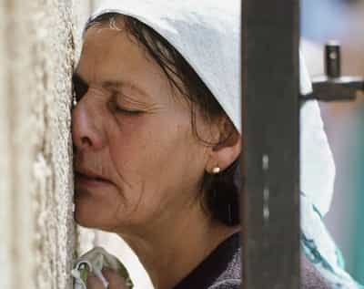
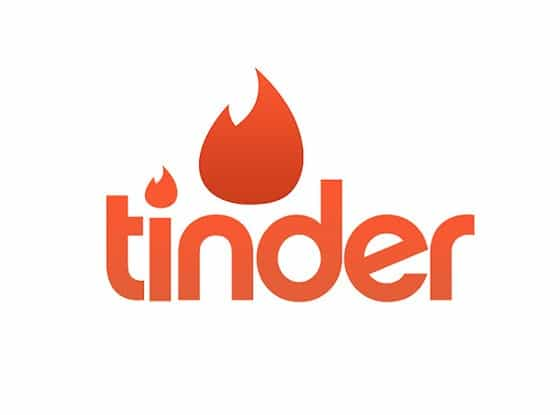

Luke Stranahan is an engineer by trade and an armed patriot by inclination. He writes for Return of Kings as a leisure pursuit and an attempt to do his part to help reverse the slide into moral decrepitude of modern society. Follow him on Twitter.


Online dating, while it’s still controversial in terms of being a legitimate and proper way to meet people, is here to stay. The best theory I have heard for it is the “three poles in the pond” theory where you meet women in bars, online, and everywhere else as your three hooks to catch women. Return Of Kings writers come in all flavors, and you’ll not get game advice from me (recommend you check out Troy, Donovan, Jon, and Roosh himself for that) but, as I am winding down a stint on many of the dating websites, here’s some advice on six of the popular ones.
One of the original online dating sites, E Harmony is purely pay to play; you’re either subscribed or you’re not. The service benefits from its reputation as one of the oldest and most serious sites, so, theoretically, you’d find older, more set-up women looking for something serious.
E Harmony has their vaunted matching system as their main thing; expect to spend about 2 hours filling out their profile, and the reason is that their matches should match you better than other sites. This is important because the ONLY girls you will see are the ones they send you. This is the only online dating service (other than Tinder, which is simply an app) that will not let you search on your own.
This was, for a while, a good thing. Remember, women would only get a certain amount of matches too, so it put a little bit of the brakes on the hypergamous meat market women enjoy on most dating sites. However, E Harmony pulled a bullshit move last year, and they removed the “active within” feature from people’s profiles.
Ostensibly to prevent online stalking (so a customer service rep told me), it also conveniently removes the only direct indicator of whether the match you were sent was of a girl who had an active subscription or was a ghost who had stopped their subscription months or years ago. You then had to look for activity like a girl changing her profile or pictures, or viewing your profile to determine if she was active or not.

I don’t recommend this one anymore, and I’m not sure I ever did. I suppose it’s worth the discounted rate of 8 bucks a month they beg people to come back with, but new people are hit for over 30 a month. The typical girl you will see on here is an about to hit the wall or just did career girl who is slightly overweight and got frustrated and unsubscribed two months ago.
Match is the other mainstream pay dating site, and is probably the most popular of them. They’ve got the E Harmony style match system, and all sorts of searches you can do. There’s about 9 terms for female body type (6 mean fat) and you can search by them and anything else you want. If I want pale redheaded Presbyterians with graduate degrees within 50 miles of me, I’ll find all one of them, but that degree of precision is available.

Match is a pay site for anything serious, like emailing, but they let people make profiles for free, which leads to a lot of spam profiles that are fairly easy to discern early on in your time there. That being said, if you want to pay for an online dating site, I’d choose this one, and make sure you don’t have a recurring subscription.
The typical match.com girl is a few years younger than the E Harmony girl, still pre-wall, but probably ugly or overweight, and out of college and in the first years of her power-career path. Search by body type (you want thin and athletic only) and be prepared to go to local big cities if you don’t live in one.

Here there be crazy. OKC is a site populated by people who are younger, freakier, and have way more crazy shit going on in their lives than any of the other sites I’ll cover. Mostly a free site, but with an A List upgrade that will let you see who “likes” you and sort by body type and “attractiveness,” this one has the crazies.
If you want a two-spirited, pansexual satanist with blue hair, 50% or greater tattoo skin coverage, and more hardware in her piercings than the bolt aisle at Home Depot, this is the place for you. They have a beleaguered match function, but most everything is done by manual searching and a bunch of insipid, but weirdly creative while wildly inappropriate questions. Although, “if your partner missed and hit the wrong hole, would you go with it?” might be useful.
The Ok Cupid girl is in her young 20s and would be attractive if she hadn’t mutilated herself. She usually doesn’t still live at home with her folks, but she doesn’t really have a place either, yet; a shady apartment in the hood is the best you can get. Her profile reads like the bearings on her hamster wheel are about ready to fail, and, although many of them have a kid or two, there’s no “my children come first,” it’s more of an “oh yeah, I had a kid.”
Maybe not THIS crazy, but close.
A side effect of this being a popular, freaky, free site is the international spam. I got more visits from chicks from every Asian country except China and their Great Firewall than I ever did Americans. Use this site if you want to bag some freaky, and consider putting your Johnson in a vacuum sealer first.
Christian Mingle is the polar opposite of OK Cupid. It’s a pay site, only a pay site, and only for Christians and those who identify as one (which is not the same thing at all.) Powered by a clunky web design that looks like it came from the late 90s, Christian Mingle is a low-activity place of so-called Christians that, oddly enough, are on the other dating sites as well.
A disclaimer is in order; while I, myself, was on these sites as well, I used the same pictures and close to the same profile. I saw a good amount of girls that had enough of the same pictures to clue me in that they were the same person, but had a lot of others tailored to the site, and their profiles were very different as well. Smart marketing or hypocrisy, you decide.
Most dating websites allowed me to pony up the fee for the subscription or the upgrade, then cancel the recurring payment, and ride out my months worry free that I did not have to remember to cancel it. Not Christian Mingle; the second I turned off the recurring payments, they shut me down till I turned it back on, and I finally cancelled them the day my subscription was set to renew. Not very Christian of them.
The typical Christian Mingle girl is mid twenties to 30 and had the pre-Wall epiphany that men do not marry skanks, so she better get busy making sure she is not seen as one. The ugly and overweight ones are probably honest about not having been with many dudes, but, if any hot ones try that, they are probably “reformed” Christians that did a lot of this, unless they appear so awkward they are obviously repressed snake-handling Pentecostals.
I don’t recommend this site, or any other “flavor” online dating website like Farmers Only, Our Time, JDate, or Black People Meet simply due to lack of numbers, and the same people will be a subset on the mainstream ones.
POF is where everyone else ends up. It’s the biggest online dating site, and the upgrade package is nice but not necessary, so it’s the standard place to have an online presence for girls where they can at least pretend to be looking for something serious (as opposed to Tinder.)
The Pareto Principle aspect of the sexes is on full display here. The top 80% of girls, and, believe me, the lower parts of that range down at 30% or so are some serious 4s have standards higher than Cheech Marin, are only going for men with everything. This leads to some odd collisions of reality, where a mid-20’s chunky girl with a receptionist job is turning down a career man with a decent physique as she is sure she can do better.
POF is mainly a search on your own site, along with a token match system called Meet Me, but there is a large forum community as well, of which I haven’t partaken and see no reason why you should, either.
The typical plenty of fish girl, at least here in the Midwest, is a large white girl with a low paying job in some half-horse town that may or may not have children with someone to whom she was never married. Tattoos a given, piercings somewhat, not so much on the blue hair. If you want to slap together a decent profile, you should do it for the laughs, but you’re looking for diamonds in sludge here.

Everyone knows Tinder, and it’s so simple I won’t comment too much on it. There are a few things I learned that I can give you.
Location really matters. Out here in the corn/rust belt Midwest, the girls are either like the worst of POF above, or obviously bots with exotic names, perfect pictures, and no profile. You swipe right on the latter, it will be an instant match, a message following 30 seconds later with a lewd suggestion and enticement to come to this site they link, or a burner phone number to text, and then you get unmatched and the tracks erased about ten minutes later after they figure out you’re not biting.
At least it’s better than what it was a year ago, when the spambots actually worked on the Tinder chat channels. Every girl was bored, on her day off, and about to open a bottle of wine before going to meet her friends later at a generic restaurant-sounding name that the programmer desperately wanted you to believe was in your town.
Age matters. I’m 36, and, although I can set my standards from 25-30, that’s not who I am going to get sent. Every girl is mid 30s to 50, and either has kids, or looks heavily pregnant but is just obese.
Attention span matters. You have about two or so chat exchanges to get her number, then you need to set up a get together soonest. Also, you have to strike the balance between committer and bad boy that the girl who is there for a relationship but realizes she has to put out first, which is all of them, wants.
It’s a hookup app, and it’s free. There’s tons of guides on how to make your picture and profile, if you want another method of easy lays, go for it.
Everything in the world is becoming dumbed-down and more stupid, from elementary education to driving, and online dating is no exception. The traditional sites are slowly dying as people move from accessing websites from their home computer to running apps off their phones, and the rise of Tinder follows right along. Run it, POF if you want a free site, and Match if you want to pay, but don’t make it your only way to meet girls in any case.